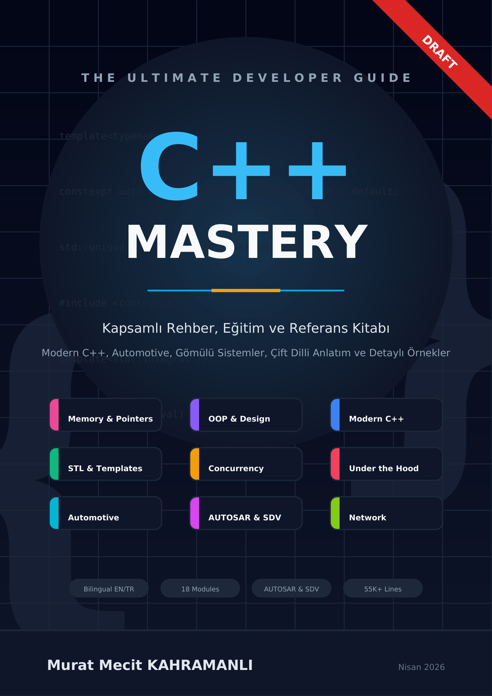

Profesyonel C++ Öğrenme Müfredatı — Temellerden Gömülü Sistemlere

Özgürce kullanın, değiştirin ve dağıtın. Atıf yapın, değişiklikleri belirtin ve lisansı ekleyin.
Tam Lisans →
Atıf ile paylaşın ve uyarlayın. Yalnızca ticari olmayan. Türev eserler aynı lisansla.